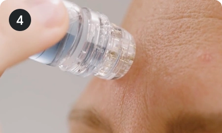
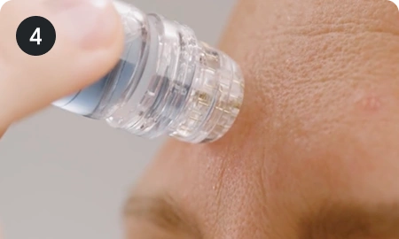
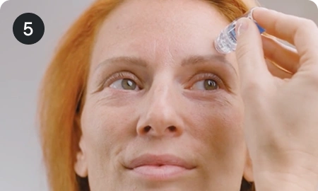
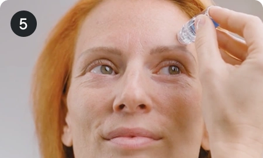
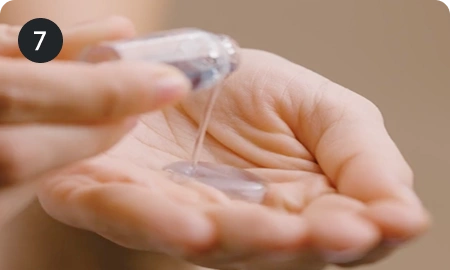
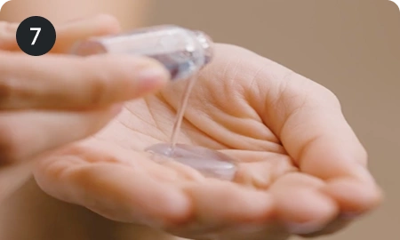

Contents
Product Information
This innovative 2-in-1 system combines precision and care to revitalize your skin from the inside out.

It triggers your skin’s natural repair response, boosting collagen production and cell renewal.

Its 0.5 mm needles creates tiny, invisible channels in the surface of your skin and infuses the serum of your choice (for Wrinkles / for Dark Spots) directly below the skin barrier, accelerating absorption of active ingredients for faster results.

The outcome? A radiant, rejuvenated complexion that reflects true skin health.
Learn more about Micro-Infusion SystemUsage Instructions
- Micro-Infusion Device
- 1 sterile needle head
- Micro-Infusion serum
Step-By-Step Guide

Cleanse your face thoroughly to remove all traces of makeup and lotions. Pat dry.
Spritz our Dermal Mist to refresh and prepare your skin further and wait for it to dry before beginning.

Pour one full Qure serum ampoule into the device chamber.

Attach the micro-needle head with the plastic cap still on the device.
Turn the device upside down for 1–2 minutes to allow the serum to saturate the needles.
 

Remove the cap and stamp gently across your face using light pressure.
 

Work section by section, repeating each area 2–3 times.


Make sure the serum is always at the needle end while stamping. If the serum is not coming through, tilt the device upward or lean your head back to help it flow.
You can also pop the lid back on, turn the device upside down, and tap the end firmly to push the serum down.
 

Once finished, pat any remaining serum into your skin with clean hands.
After your treatment:
- Apply gentle, hydrating skincare if you need it.
- Avoid using makeup or active ingredients (like retinoids or acids) for at least 24 hours.
- Avoid heat, sweating, and direct sun.
Serum Ingredients & Information
Each Qure Micro-Infusion treatment is powered by a single-use ampoule of concentrated serum, designed to target specific skin concerns with clinically backed ingredients.
These serums are lightweight, fast-absorbing, and free from fragrance, parabens, and harsh actives.
Smoothes and evens skin to promote a brighter looking complexion.
Helps to plump skin, reducing the look of fine lines and wrinkles.
Product Claims
- Single-use disposable needle-heads with 24 karat gold-plated needles minimize the risk of infection and irritation.
- Delivers science-backed serums directly to skin to help increase absorption & results.
- Little to no downtime & quick recovery of the skin.
- Great alternative to in-clinic microneedling.
- User study shows that the Micro-Infusion System improves overall skin appearance, with the most noticeable results seen in the appearance of pores and wrinkles.
- 70% of participants say their fine lines looked smoother.
- 93% noticed results the next day after their first Micro-Infusion treatment.
- 70% of participants say their skin looked brighter and more even toned.
Content Requirements
- How it works
- How to use
- Information about the serums and the specific skin concerns they treat.
- Affordable and convenient at-home 5-minute treatment that costs up to 15X less than professional in-clinic treatments
- Before and After
- How to use and product details
- Comparing Micro-Infusion to alternatives
- What experts say/expert review
Creative Direction
- Use bright, natural lighting. No filters.
- Keep backgrounds clean and uncluttered.
- Ensure the Qure Micro-Infusion and serums are the main focus of the content.
- When demonstrating the application, ensure your skin is makeup-free (or with no visible makeup) to keep the results authentic and easy to see.
- Include clear close-ups during use to show technique and effectiveness.
- Be sure to include before-and-after visuals to highlight visible improvements—ideally captured in similar lighting and framing for credibility and consistency.
- In cover photos for video content always show yourself using the Qure Micro-Infusion (unless agreed otherwise).
Tag and mention @qureskincare #quremicroinfusion #microneedling #microinfusion #athomefacial #wellageing #qure #qureskincare
Include your affiliate or other links provided by Qure in Instagram Stories and content captions. If the link can’t be placed in bio, include it in linktr.ee or similar.
Content Angles & Ideas
Always introduce your content with a strong visual or vocal hook. We encourage you to be creative and have fun with your content, but have added some examples below for you!
Content Examples